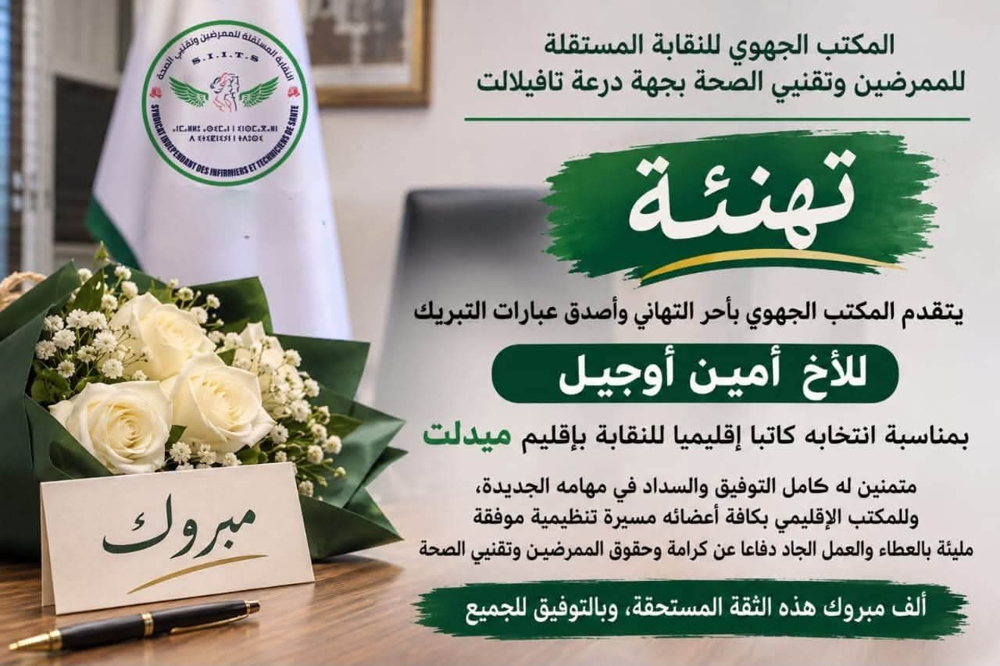

ميدلت: المؤتمر الإقليمي الثاني ينتخب أمين أوجيل كاتباً إقليمياً

عقدت النقابة المستقلة للممرضين وتقنيي الصحة مؤتمرها الإقليمي الثاني بإقليم ميدلت يوم السبت 31 أكتوبر 2026 بدار الشباب ابن خلدون بميدلت، تحت شعار «وحدتنا قوتنا... والنضال سبيلنا لانتزاع المطالب»، بمشاركة حاشدة لنساء ورجال التمريض من مختلف الدوائر والمؤسسات الصحية بالإقليم.
وافتُتحت الأشغال بكلمة توجيهية للكاتب الجهوي السيد عبد الحق العزيزي، أكد فيها على ضرورة التشبث بالخيار النضالي المستقل كضامن لحماية الحقوق وصون الكرامة. وبعد عرض التقريرين الأدبي والمالي للمكتب المنتهية ولايته، صادق المؤتمرون عليهما بالإجماع، وكُرّم أعضاء المكتب الإقليمي السابق تقديراً لتفانيهم.
وانتخب الجمع العام مكتباً إقليمياً جديداً بتزكية السيد أمين أوجيل كاتباً إقليمياً، إلى جانب تشكيلة تمثل مختلف المؤسسات والمراكز الصحية بالإقليم. وأعلن الحاضرون جاهزيتهم لمواصلة التعبئة والالتفاف حول إطارهم النقابي المستقل، سبيلاً لانتزاع الحقوق المشروعة وتحقيق العدالة المهنية لجميع الأطر التمريضية والتقنية بإقليم ميدلت.
وبهذه المناسبة، يتقدم المكتب الجهوي للنقابة بجهة درعة تافيلالت بأحر التهاني وأصدق عبارات التبريك للأخ أمين أوجيل بمناسبة انتخابه كاتباً إقليمياً بإقليم ميدلت، متمنياً له كامل التوفيق والسداد في مهامه الجديدة، وللمكتب الإقليمي بكافة أعضائه مسيرة تنظيمية موفقة مليئة بالعطاء والعمل الجاد دفاعاً عن كرامة وحقوق الممرضين وتقنيي الصحة. ألف مبروك هذه الثقة المستحقة، وبالتوفيق للجميع.
فتح في تطبيق النقابة